При рассмотрении работы процессора подчеркивалось, что информация о том, какую машинную операцию надо выполнить в данный момент, над какими операндами и куда поместить результат, задается машинной командой. При этом любая программа неймановской машины представляет собой последовательность команд, отображающих все действия, необходимые для решения задачи по некоторому алгоритму.
Машинная команда представляет собой код, определяющий операцию вычислительной машины и данные, участвующие в операции. В общем случае команда должна содержать также в явной или неявной форме информацию об адресе, по которому помещается результат операции, и об адресе следующей команды.
Машинная операция – это действия машины по преобразованию информации, выполняемые под воздействием одной команды.
По характеру выполняемых операций различают следующие основныегруппы команд:
В общем виде машинная команда имеет структуру, изображенную на рис. 4.1.
Таким образом, команда состоит из операционной и адресной частей. Эти части, в свою очередь, могут состоять из нескольких полей (особенно адресная).
Операционная часть – содержит код, который задает вид операции (сложение, умножение, передача и т.д.).
Адресная часть – содержит информацию об адресах операндов и результата операции, а в некоторых случаях и следующей команды.
Структура команды – определяется составом, назначением и расположением полей в команде.
Формат команды – это ее структура с разметкой номеров разрядов, определяющих границы отдельных полей команды.
Задача выбора оптимальных структур и форматов команд при проектировании новых ЭВМ является одной из важнейших, поскольку от правильности ее решения зависит быстродействие и производительность ЭВМ.
Проблема состоит в том, что, с одной стороны, в команде желательно разместить максимум информации о выполняемой операции. С другой стороны, для упрощения аппаратуры и повышения быстродействия ЭВМ длина формата команды должна быть согласована с длиной обрабатываемых машинных слов, составляющей обычно 16-32 бита (для того чтобы можно было использовать для хранения и обработки операндов и команд одни и те же аппаратные средства). Формат команды должен быть, по возможности, короче, укладываться в машинное слово или полуслово, а для ЭВМ с коротким словом (8-16 бит) быть малократным машинному слову. Решение проблемы выбора оптимального формата команды значительно усложняется в микроЭВМ, работающих с коротким словом.
В абсолютном большинстве случаев ОП универсальных ЭВМ является адресной. Это значит, что каждой хранимой в ОП единице информации (байту, слову, двойному слову) ставится в соответствие специальное число – адрес, определяющий место ее хранения в памяти. В современных ЭВМ различных типов минимальной адресуемой в памяти единицей информации в большинстве случаев является один байт, т.е. 8 бит с 9-м контрольным разрядом. Иногда бывает и полубайт, т.е. 4 разряда и даже один бит. Более крупные единицы информации – слово, двойное слово и т.д. образуются из целого числа байт. В зависимости от способа хранения информации в ОП их адресом считается адрес старшего или младшего байта.
В общем случае разрядность машинного слова может определяться разрядностью АЛУ процессора, разрядностью шины данных, шириной выборки ОП и другими факторами. Наиболее часто разрядность машинного слова соответствует разрядности операндов, которые наиболее эффективно обрабатываются процессором. Например, процессор I80386 имеет 32-разрядные АЛУ и 32- разрядную шину данных. Однако разработчики устройств на базе этого процессора за машинное слово выбрали 16- разрядный двоичный код при ширине выборки ОП 1 байт. Следует иметь в виду, что ширина выборки ОП – это техническая характеристика БИСов памяти, а байт, слово, двойное слово и т.д. – логические единицы информации, которые формируются контроллером памяти и операционной системой и обычно кратны ширине выборки. При рассмотрении процессов передачи и обработки информации внутри ЭВМ в большинстве случаев оперируют именно этими логическими единицами.
Процесс эволюции ЭВМ и расширение сферы их целевого использования, совершенствование аппаратного и программного обеспечения ЭВМ привели к созданию машинных команд очень сложной структуры. Однако если отбросить детали построения команд конкретных процессоров, возможные структуры машинных команд сводятся к пяти основным типам.
1. Четырехадресная структура
Такая команда содержит наиболее полную информацию о выполняемой операции (рис. 4.2, а), так как она содержит поле кода операции и четыре адреса для указания ячеек памяти двух операндов, участвующих в операции, ячейки, в которую помещается результат операции, и ячейки, содержащей следующую команду. Такой порядок выборки команд называется принудительным. Он использовался в первых моделях ЭВМ, имеющих небольшое число команд и очень незначительный объем ОП.
Рассмотрим длину такой команды применительно к ЭВМ, имеющей порядка 200 команд и объем памяти порядка 16 Мбайт. В этом случае длина КОП будет:
NКОП = log2200, т.е. 8 разрядов (28 = 256).
Для обеспечения доступа ко всем ячейкам памяти потребуется
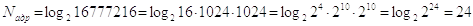
Таким образом, длина четырехадресной команды составит
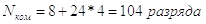
Полученная длина команды оказывается недопустимо большой, поэтому в современных ЭВМ такая структура команд не используется.
2. Трехадресная структура
Можно построить ЭВМ так, что после выполнения команды по адресу K (команда занимает L ячеек памяти) выполняется команда по адресу K+L. Такой порядок выборки команд называется естественным. Он нарушается только специальными командами передачи управления. При естественном порядке выборки адрес следующей команды формируется в устройстве, называемом счетчик адреса команд. В этом случае команда становится трехадресной (рис. 4.2, б).
3. Двухадресная структура
В большинстве случаев непосредственно перед выполнением операции операнды помещаются во внутренние регистры процессора. Можно построить аппаратную часть процессора таким образом, что результат операции будет всегда помещаться в фиксированный регистр процессора, например на место первого операнда. В этом случае команда будет двухадресной, поскольку адрес результата подразумевается (рис. 4.2, в).
4. Одноадресная структура
В одноадресной команде (рис. 4.2, г) подразумеваемые адреса имеют уже и результат операции, и один из операндов. Для этого аппаратная часть процессора должна быть построена так, чтобы один из операндов, например первый, и результат операции размещались в одном и том же фиксированном регистре. Выделенный для этой цели внутренний регистр процессора получил название аккумулятор. Адрес же другого операнда указывается в команде.
5. Безадресная структура
Использование безадресных команд (рис. 4.2, д) возможно только при естественном порядке выборки команд и подразумеваемых адресах обоих операндов и результата операции, например при работе со стековой памятью. В этом случае один операнд находится в вершине стека, а второй операнд – в аккумуляторе. Туда же помещается и результат.
Обычно в ЭВМ используется несколько форматов команд разной длины. Кроме того, трехадресные команды в современных универсальных ЭВМ практически не используются, так как являются слишком громоздкими (хотя и самыми удобными с точки зрения программиста). Обычно используются одно- и двухадресные команды и их модификации. Следует отметить, что трехадресные команды используются при работе с памятями небольшого объема. Обычно это массивы внутренней памяти процессора. Рассмотренные структуры команд достаточно схематичны. В реальных ЭВМ адресные поля команд большей частью содержат не сами адреса, а только информацию, позволяющую определить действительные (исполнительные) адреса операндов в соответствии с используемыми в командах способами адресации.
Определимся с терминами, которые будут использоваться ниже.
Адресный код (АК) – это информация об адресе операнда, содержащаяся в команде.
Исполнительный адрес (АИ) – это номер ячейки ОП, к которой производится фактическое обращение.
В большинстве команд современных ЭВМ адресный код не совпадает с исполнительным адресом. Проблема выбора способов адресации и формирования исполнительного адреса, как и системы команд, относится также к важнейшим при разработке новых процессоров и ЭВМ.
Как уже отмечалось в п. 5.2, процесс эволюции ЭВМ привел к появлению команд очень сложной структуры. Это в полной мере относится и к системам адресации, используемым в современных универсальных ЭВМ, поддерживающих многозадачные режимы и виртуальную память. Между тем эти системы адресации являются сложными комбинациями относительно небольшого количества способов адресации, разработанных еще для ЭВМ первых поколений. Ниже рассмотрены основные из этих способов адресации.
Подразумеваемый операнд
В команде не содержится явных указаний о самом операнде или его адресе. Операнд подразумевается и фактически задается кодом операции команды. Этот метод используется редко, но иногда бывает очень удобен, например, в командах подсчета, когда к содержимому счетчика необходимо добавить фиксированное приращение. Это касается и других операций, связанных с добавлением (вычитанием) константы.
Подразумеваемый адрес
В команде не содержится явных указаний об адресе участвующего в операции операнда или адресе результата операции. Так, например, при выполнении данной операции результат всегда засылается по адресу второго операнда или в другой, заранее определенный, регистр. В простейших микропроцессорах результат всегда помещается в аккумулятор.
Непосредственная адресация
В команде содержится не адрес операнда, а непосредственно сам операнд (рис. 4.3). Это способ уменьшения объема программы и занимаемой памяти, так как не требует операций обращения к памяти и самой ячейки памяти.
Применение данного способа ускоряет вычисления. Обычно он используется для хранения различных констант.
Прямая адресация
Исполнительный адрес совпадает с адресной частью команды, т.е. адресный код совпадает с исполнительным адресом (рис. 4.4). Этот способ был основным в первых ЭВМ. В настоящее время используется в комбинации с другими способами.
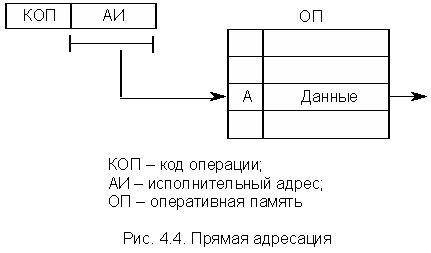
Достоинства: быстрота исполнения и простота реализации. Недостатком является длинная адресная часть команды.
Относительная адресация, или базирование
Исполнительный адрес (АИ) определяется как сумма адресного кода команды (АК) и некоторого числа АБ, называемого базовым адресом. АИ = АБ + АК (рис. 4.5).
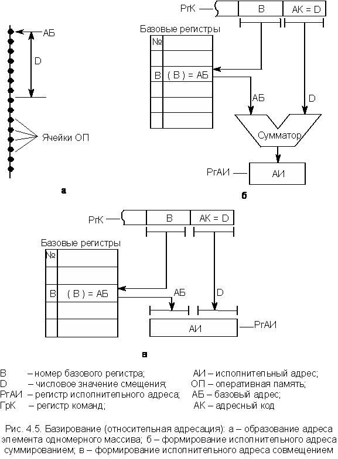
Для хранения АБ используются базовые регистры. Это или специальные внутренние регистры процессора и сверхоперативной памяти, или специально выделенные ячейки ОП с короткими начальными адресами. В команде выделяется поле "B" для указания номера базового регистра. Число разрядов в базовом адресе АБ выбирается таким, чтобы можно было адресовать любую ячейку ОП. Адресный код АК самой команды имеет мало разрядов и используется для представления лишь сравнительно короткого "смещения" (D). Это смещение определяет положение операнда относительно начала массива, задаваемого базовым адресом АБ (рис. 4.5, а).
Возможны два варианта формирования АИ при базировании.
Метод суммирования (рис. 4.5,б)
Этот метод прост и позволяет задавать в качестве АБ любой адрес ОП. Недостатком является то, что на операцию суммирования уходит время.
Метод совмещения (рис.5.5, в)
В этом случае АБ содержит старшие, а адресный код АК младшие разряды исполнительного адреса АИ, которые в регистре адреса ОП объединяются (операция конкатенации). При таком методе формирования АИ базовый адрес АБ может задавать не любую ячейку, а только ту, адрес которой содержит нули в младших разрядах, соответствующих смещению. Формирование адреса осуществляется быстрее, так как не требуется операции суммирования.
Регистровая адресация
Это частный случай так называемой укороченной адресации, суть которой сводится к тому, что используется только небольшая группа фиксированных ячеек памяти с начальными (короткими) адресами (0000001, 0000010, 0000011 и т.д.). Такая адресация используется только совместно с другими типами адресации.
При использовании укороченной адресации длина команды существенно сокращается, так как используются только младшие разряды адресов.
В случае регистровой адресации (рис. 4.6) в качестве фиксированных ячеек с короткими адресами используются регистры внутренней памяти процессора, которых обычно немного. Поэтому разрядность АК также невелика.
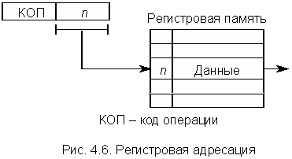
Это, фактически, прямая адресация к сверхбыстрой памяти процессора. Достоинства данного способа адресации – укорочение команд, увеличение скорости выполнения операций. Недостаток – малое число адресов.
Косвенная адресация
Адресный код (АК) команды указывает адрес ячейки ОП, в которой находится исполнительный адрес (АИ) операнда или команды, т.е. это адрес адреса – АА. Схема косвенной адресации представлена на рис. 4.7.
На косвенную адресацию указывает код операции (КОП) команды. В некоторых ЭВМ в команде отводится специальный разряд (указатель адресации – УА), и цифра 0 или 1 в нем указывает, является адресная часть команды прямым адресом или косвенным.
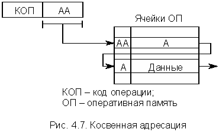
В ряде случаев используется многоступенчатая косвенная адресация. В этом случае ячейки ОП также содержат разряд УА. Перебор ячеек ОП происходит до тех пор, пока не будет найдена ячейка, в которой УА определит прямую адресацию.
Косвенная адресация широко используется в микропроцессорах и малых ЭВМ, имеющих короткое машинное слово, для преодоления ограничений короткого формата команды. Такой способ адресации удобен также, когда требуется модификация исполнительных адресов, например, при циклической обработке элементов массива. Для этого в микропроцессорах и малых ЭВМ совместно используют регистровую и косвенную адресации (рис. 4.8).
Такая адресация позволяет микропроцессору адресоваться к ОП достаточно большого объема при небольшой длине адресного поля команды (адресного поля достаточно только для указания номеров нескольких внутренних регистров микропроцессора). Естественно, что перед выполнением этой команды в соответствующий внутренний регистр микропроцессора должен быть загружен полный адрес интересующей ячейки ОП.
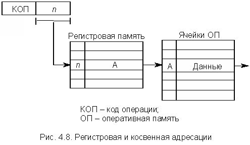
Автоинкрементная и автодекрементная адресации
Выше отмечалось, что при косвенной регистровой адресации в соответствующий регистр перед использованием необходимо загрузить исполняемый адрес, по которому произойдет обращение к ячейке ОП. На это уходит время. Однако при обработке массива данных этих потерь можно избежать, добавив механизм автоматического приращения или уменьшения содержимого регистра при каждом обращении к нему. В этом случае загрузка начального адреса массива происходит один раз, а затем при каждом обращении формируется адрес следующего элемента массива.
Автоинкрементная адресация – сначала (при каждом обращении) содержимое регистра используется как адрес операнда, а затем получает приращение, равное числу байт в элементе массива, т.е. формируется адрес следующего элемента.
Автодекрементная адресация – сначала содержимое соответствующего регистра уменьшается на число, равное числу байт в элементе массива, а затем используется как адрес операнда.
Стековая адресация
При рассмотрении устройств памяти отмечалось, что основной принцип работы стекового ЗУ соответствует правилу: "последний пришел – первый ушел" (имеется в виду стек LIFO). Это правило реализуется автоматически. Поэтому при операциях со стеком возможно безадресное задание операнда – команда не содержит адреса ячейки стека, а содержит только адрес (или он подразумевается) регистра или ячейки ОП, откуда слово загружается в стек или куда выгружается из стека. Стек может быть реализован как аппаратным путем, так и программно. В первом случае стек представляет собой одномерный массив регистров, связанных между собой разрядными цепями передачи данных. Обычно он снабжен счетчиком стека, по содержимому которого можно контролировать переполнение стека. Во втором случае стек организуется на последовательно расположенных ячейках ОП. Для его реализации требуется еще один регистр – указатель стека, в котором хранится адрес вершины, т.е. последней занятой ячейки ОП из массива ячеек, отведенных под стек.
Стек является эффективным элементом архитектуры современных ЭВМ, позволяющим во многих случаях существенно повысить скорость обработки информации. В универсальных ЭВМ общего применения (таких как персональный компьютер) программисту в большинстве случаев доступен только программный стек. На рис. 4.9 приведена схема записи числа в "перевернутый" программный стек, который используется наиболее широко.
При выполнении команды загрузки слова в стек (содержимое РгК) из регистра (в данном случае из Рг5) или ячейки ОП сначала содержимое указателя стека (УС) уменьшается на 1 (стек "перевернутый"), а затем слово помещается в ячейку стека, указываемую УС. При выгрузке слова из стека в регистр или ОП слово сначала извлекается из вершины стека, а затем УС увеличивается на 1 (на рисунке не показано).
При надлежащем расположении операндов в стеке можно произвести вычисления полностью безадресными командами. Команды этого типа обычно инициируют извлечение из стека одного или двух операндов (слов), выполнение над ними указанных в коде команды операций и запись результата в какой-либо фиксированный регистр, например, аккумулятор. Вычисления с использованием стековой памяти удобно описывать и программировать с помощью инверсной (бесскобочной) записи арифметических выражений.
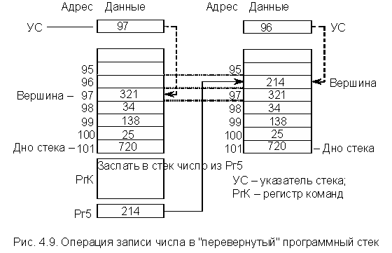
Безадресные команды на основе стековой адресации предельно сокращают формат команд, экономят память и повышают производительность ЭВМ.
В современных ЭВМ (микропроцессорах) стек и стековая адресация широко используется для:
Как уже отмечалось, современные ЭВМ во многих случаях используют сложные, комбинированные системы адресации, которые не могут быть в чистом виде отнесены к какому-либо одному из рассмотренных выше способов адресации. Это позволяет программисту более гибко и эффективно использовать все ресурсы ЭВМ. Однако разнообразие форматов команд и их длины ведет к усложнению УУ процессора и замедлению процесса выполнения команды.
Ранее уже отмечалось, что порядок выполнения команд может быть естественным и принудительным. При естественном порядке после выполнения очередной команды выбирается команда, расположенная в следующей по порядку ячейке памяти. Обычно адрес команды хранится в специальном регистре, называемом счетчиком адреса команд или просто счетчиком команд (СчК), содержимое которого после выполнения каждой команды увеличивается на 1. Если же память имеет побайтную адресацию, то на столько байт, сколько их содержит текущая команда. Цикл выборки/выполнения команд можно пояснить схемой, приведенной на рис. 4.10. Пусть L – длина команды в байтах, а память имеет побайтную адресацию. Порядок выполнения команд на рис. 4.10 следующий:
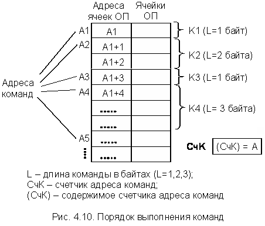
Известны многочисленные варианты команд перехода, однако общий принцип состоит в том, что адресная часть команды перехода непосредственно или после суммирования с содержимым базового регистра загружается в СчК. В результате после выполнения такой команды может быть выполнена команда из любой ячейки памяти, определяемой адресной частью команды перехода. Для упрощения рассмотрим команды перехода без относительной адресации. Кроме того, предполагается, что память имеет побайтную адресацию.
Команды безусловного перехода (БП)
Общая структура команды безусловного перехода изображена на рис. 4.11. При исполнении этой команды переход осуществляется всегда независимо от каких-либо условий.
Рассмотрим два возможных варианта реализации команд БП – переход по прямому и косвенному адресам.
Переход по прямому адресу
В данном примере и далее рассматриваются команды длиной 2 байта (L = 2). При выполнении команды К2 в счетчик команд загружается адрес А4, т.е. (СчК) = А4. После этого процессор начинает выполнять команды с адреса А4. Таким образом, последовательность выполнения команд следующая: K1 à K2 à K4 и далее по порядку.
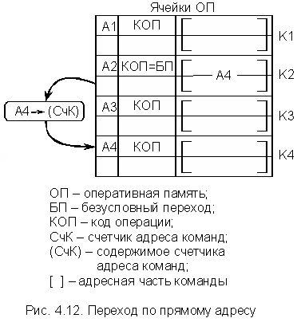
Переход по косвенному адресу
Общая структура команды изображена на рис. 4.13. На косвенную адресацию указывает код операции команды БПК (рис. 4.13, а) или специальное поле К в структуре команды (рис. 4.13, б), определяющее тип адресации.
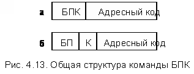
Управление передается команде с исполнительным адресом, хранящимся в ячейке (регистре) памяти, на адрес которой (которого) указывает адресное поле команды БПК (рис. 4.14). Преимущества косвенной регистровой адресации были описаны ранее. Следует иметь в виду, что К3 в ОП не является собственно командой по адресу А3 (рис. 4.14). По адресу А3 может не быть никакого КОП, поскольку здесь хранится только исполнительный адрес (АИ).
Как уже отмечалось, в современных ЭВМ широко используется относительная адресация при выполнении команд переходов всех типов, т.е. АИ формируется с учетом содержимого базового регистра.
Команды условного перехода (УП)
В этом случае адрес следующей команды зависит от выполнения некоторого условия. Обычно если условие выполняется, то происходит передача управления. Если условие не выполняется, то берется следующая по порядку команда, адрес которой определяется содержимым СчК, увеличенным на приращение адреса команды (L). Это можно записать следующим образом:
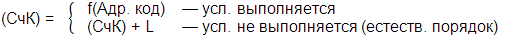
Как и в командах БП, в командах УП используется прямая, косвенная и относительная адресации. Вид функции f зависит от используемого способа адресации. Именно команды УП позволяют строить ветвящиеся и циклические программы.
Условия перехода задаются либо самим кодом операции УП, либо в виде отдельного поля команды – маски условия (кода условия). В последнем случае общий формат команды УП имеет вид, показанный на рис. 4.15.
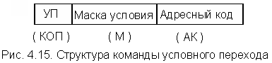
В качестве условия перехода в большинстве случаев используется тот или иной признак результата операции, выполненной под воздействием предыдущей команды. В простейших процессорах аккумуляторного типа признаки выполненной операции заносятся в разряды специального регистра процессора, называемого регистром состояния РгС (регистром признаков, регистром флажков). Туда же заносят признаки результата выполнения некоторых операций в РОНах. Аналогичные регистры используются и в более сложных процессорах. На рис. 4.16, в качестве примера, изображена часть разрядов РгС простейшего процессора КР580ВМ80 (аналог I8080).
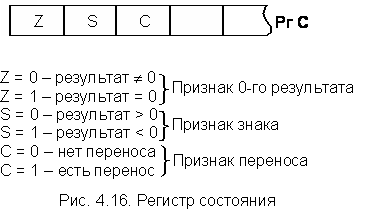
Команды УП определяют тип признака, по которому требуется осуществить переход (передачу управления). На тип признака может указывать сам КОП условного перехода либо 1 в соответствующем разряде маски условия (рис. 4.17).
В данной команде УП маска указывает на признак нулевого результата. Это означает, что переход по программе (передача управления) осуществится при нулевом результате операции в аккумуляторе или РОНе. В общем случае маска условия может указывать на несколько признаков (например, 4- разрядная маска). В этом случае условием перехода будет дизъюнкция признаков.>
Схемы выполнения команды УП при использовании прямой и косвенной адресации очень похожи на схемы, приведенные на рис. 4.12 и 4.14 для команды БП. Необходимо добавить только операцию проверки выполнения условия перехода.
Студенту рекомендуется нарисовать их самостоятельно.
Команды перехода на подпрограмму
Подпрограмма представляет собой фрагмент программы, обращение к которому может иметь место в любой точке главной программы. Для перехода к подпрограмме в ЭВМ существуют команды безусловного и условного переходов к подпрограмме (ПП и ППУ). Их особенностью является то, что помимо перехода они должны обеспечить по окончании подпрограммы возврат к исходной программе, к той ее точке, откуда был совершен переход.
Ниже будут рассмотрены только команды безусловного перехода к подпрограмме (ПП), поскольку на практике они встречаются наиболее часто. Кроме того, отличие команд ПП и ППУ такое же, как и отличие команд БП и УП, т.е. перед выполнением команды ППУ происходит проверка какого-либо признака результата из РгС (регистр состояния).
Рассмотрим подробнее операции, необходимые для выполнения команды ПП в предположении, что длина команды L = 2 байта и используется прямая адресация. Эти операции поясняются схемой, приведенной на рис. 4.18.
Перед выполнением команды ПП формируется адрес возврата (Авозвр), т.е. (СчК) = (СчК) + L (в данном случае это адрес N+2). Затем Авозвр запоминается в ячейке памяти (регистре), адрес которой (которого) в явной или неявной форме указан в команде ПП. Затем в СчК заносится содержимое адресного поля команды ПП, т.е. адрес начала подпрограммы (А). В конце подпрограммы размещается команда возврата, которая фактически является командой БПК (безусловный косвенный переход), и указывает путем косвенной адресации (через ячейку ОП или регистр) адрес ячейки ОП, куда надо возвратиться для дальнейшего выполнения основной программы. В данном случае косвенная адресация осуществляется через регистр Рг.
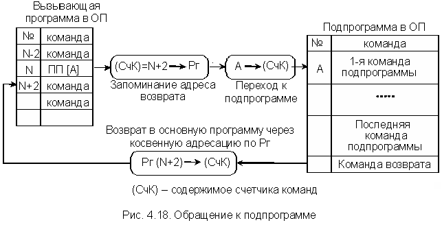
Это простейший случай обращения к подпрограмме. Однако все современные ЭВМ допускают вложенность подпрограмм, т.е. обращение из одной подпрограммы к другой. При этом глубина вложения может быть достаточно велика. Для организации таких вложенных подпрограмм используется стек. В большинстве микропроцессоров сам стек располагается в ячейках ОП, а указатель стека оформлен в виде специального регистра.
При переходе из основной программы в подпрограмму, а затем и в следующую подпрограмму, т.е. с увеличением глубины вложения, в стек каждый раз загружается текущее состояние СчК, т.е. очередной адрес возврата. Загрузка Авозвр в стек при выполнении команды ПП во всех процессорах, включая простейшие, происходит автоматически. Затем (после выполнения каждой подпрограммы) процессор по очереди извлекает из стека адреса возврата (Авозвр), попадая в конечном итоге в необходимую точку основной программы. Очевидно, что глубина вложения в этом случае определяется числом ячеек ОП, используемых под стек. Это число ячеек всегда ограничено, поскольку эти ячейки не могут одновременно использоваться другими частями программы.
Кроме того, с командами ПП связаны также некоторые проблемы в использовании внутренних регистров процессора. Необходимо обеспечить, чтобы подпрограмма ни в одном регистре не изменяла содержимого (особенно РгС), которое после возврата потребуется вызывающей программе. Для этого содержимое регистров, используемых подпрограммой, требуется временно запомнить, а по окончании подпрограммы – восстановить. Обычно для такого временного хранения удобно также использовать стек. Служебные действия по запоминанию и восстановлению содержимого регистров можно включить в вызывающую программу или в подпрограмму. Практика программирования показала, что их удобнее включать в подпрограмму, чтобы эти операции были записаны один раз в теле подпрограммы, а не каждый раз при ее вызове. Следует отметить, что в некоторых современных процессорах при выполнении команды ПП предусмотрено автоматическое сохранение в стеке содержимого не только СчК, но и определенных групп внутренних регистров, что упрощает процедуру разработки подпрограмм.
Помимо рассмотренных операций для работы подпрограммы необходимо каким-либо образом сообщить ей о размещении обрабатываемых данных (входные параметры) и формируемых результатах (выходные параметры). Это можно сделать различными способами, но в настоящем курсе этот вопрос не рассматривается.
Характерным моментом в процессе переработки информации в ЭВМ является цикличность вычислительных процессов, при которых одни и те же операции могут выполняться над различными операндами, расположенными упорядоченно в памяти (т.е. над элементами некоторых информационных массивов). На рис. 5.19 в качестве простого примера показан одномерный массив данных, в котором подлежащие обработке операнды a0, a1 … ak-1 расположены последовательно, со сдвигом на q ячеек. Для обработки элементов такого массива необходимо, чтобы исполнительные адреса команд, вызывающих эти элементы, изменялись при каждой итерации цикла. Как уже отмечалось, для этой цели можно использовать механизм косвенной адресации, что, однако, требует относительно больших временных затрат.
Для предотвращения подобных потерь времени в современных ЭВМ используется механизм автоматического изменения исполнительных адресов соответствующих команд согласно расположению в ОП обрабатываемых операндов. Такой процесс называется модификацией исполнительных адресов команд (в некоторых источниках – модификацией адресных частей команд). Кроме того, этот механизм позволяет на аппаратном уровне реализовать команды управления вычислительным циклом, т.е. обеспечить необходимое количество итераций цикла с последующим выходом из него. Упрощенный алгоритм функционирования этого механизма поясняется схемой на рис. 4.19.
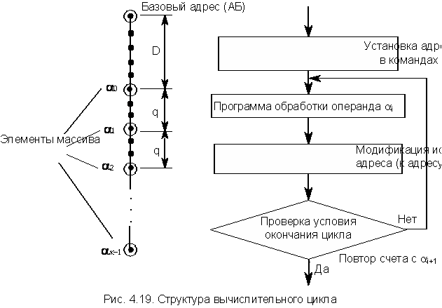
Контроль окончания циклических вычислений производится двумя способами:
Автоматическая модификация команд и управление вычислительными циклами в современных ЭВМ обеспечиваются механизмом индексации. Это понятие включает в себя специальный способ кодирования команд, командные и аппаратные средства задания и выполнения модификации исполнительного адреса и управления вычислительными циклами. Перечисленные средства в целом называются также индексной арифметикой.
Как способ модификации исполнительного адреса команды индексация является развитием механизма относительной адресации (базирования), с которым она часто используется совместно.
Для выполнения индексации в ЭВМ вводят индексные регистры, в качестве которых могут использоваться либо регистры внутренней памяти процессора, либо внешние по отношению к нему специальные быстродействующие регистры. В некоторых ЭВМ предусмотрена возможность, при определенных условиях, в качестве индексных регистров использовать ячейки ОП. В общем случае при использовании механизма индексации в АК команды выделяют три поля: B – номер базового регистра, D – смещение, X – номер индексного регистра.
Исполнительный адрес при индексации формируется путем сложения смещения (D), содержимого индексного регистра (I), а при наличии базирования – и базового адреса (АБ). Именно этот характерный случай показан на рис. 4.20.
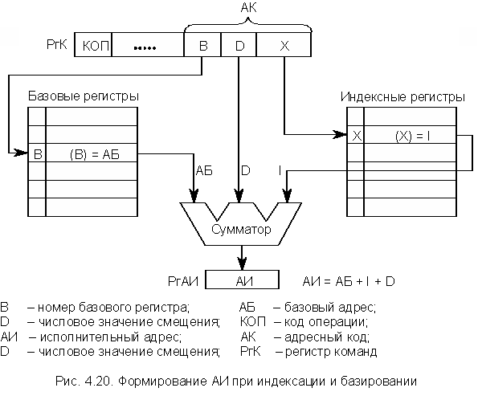
В ряде случаев базовые и индексные регистры назначаются программистом из некоторого общего массива регистровой памяти. Операция получения АИ выполняется либо в АЛУ процессора, либо в специальном сумматоре блока индексной арифметики, что повышает быстродействие ЭВМ, но и увеличивает объем оборудования.
Индексация служит не только для организации циклов, но в сочетании с базированием является средством описания элементов информационных массивов, размещенных в ОП. Индексация вообще позволяет достаточно легко модифицировать исполнительные адреса, оставляя неизменным код самой команды, хранящейся в ОП.
Для управления индексацией используются команды, задающие операции над содержимым индексных регистров – команды индексной арифметики. Основные виды индексных операций следующие:
Изменение индекса состоит в сложении (вычитании) значения индекса с фиксированным приращением, производимым каждый раз при повторении цикла. Команда изменения индекса указывает номер индексного регистра, а также значение и знак (либо адрес) приращения. Если приращение всегда фиксировано и равно, например, 1 или L (длина слова в байтах), то используются команды с подразумеваемым операндом.
Для проверки окончания цикла используют или обычную команду перехода по условию, налагаемому в этом случае на какую-либо переменную, изменяющуюся в процессе вычислений, или специальные команды "УП по счетчику" (УПС) и "УП по индексу" (УПИ).
Условный переход по счетчику (УПС)
Счетчиком служит обычно один из индексных регистров, в который перед началом цикла загружается число итераций цикла. Возможная структура команды показана на рис. 5.21, а.
В данном случае счетчик организован на индексном регистре R1. Пусть для адресации сегмента кодов команд используется базирование, тогда адрес АИ = (В) + D является адресом начала цикла. Команда УПС уменьшает содержимое регистра R1 на 1 при каждой итерации цикла. В случае неравенства содержимого счетчика нулю ((R1) ¹ 0) осуществляется переход на АИ, т.е. в начало цикла. Если (R1) = 0, то осуществляется переход к команде, следующей по порядку за командой УПС, т.е. выход из цикла.
Условный переход по индексу (УПИ)
Возможная структура команды показана на рис 4.21, б. Пусть R1 – номер индексного регистра, а R2 – номер регистра, хранящего приращение. Регистр, в котором хранится предельное значение индекса, имеет подразумеваемый адрес и, следовательно, должен быть фиксированным для данного процессора. Пусть это будет регистр, следующий по порядку за регистром, хранящим приращение, т.е. R3. Команда УПИ складывает содержимое регистров R1 и R2, помещает результат сложения в R1 и сравнивает его с содержимым R3. Если результат сложения меньше или равен содержимому R3, то управление передается по адресу АИ = (В) + D, т.е. происходит повторение цикла. В противном случае выполняется переход к команде, следующей по порядку за командой УПИ, т.е. выход из цикла.
Специальные команды индексной арифметики имеют, как правило, аппаратную реализацию, что позволяет свести к минимуму временные затраты на модификацию исполнительных адресов команд и операндов, связанных с управлением вычислительными циклами.
Рассмотренный выше механизм индексации можно назвать классическим. В современных ЭВМ используются различные его модификации, причем во многих случаях он не присутствует в чистом виде, а реализуется через другие механизмы организации вычислительного процесса. Кроме того, следует иметь в виду, что назначение полей адресного кода (B, D, X) зависит от архитектуры ЭВМ, разрядности машинного слова, системы команд, терминологии, используемой конкретным производителем ЭВМ в технической документации.